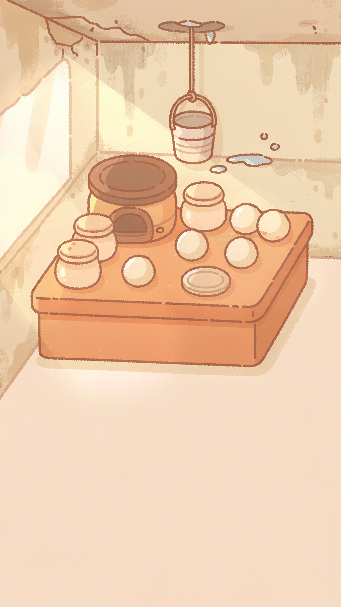
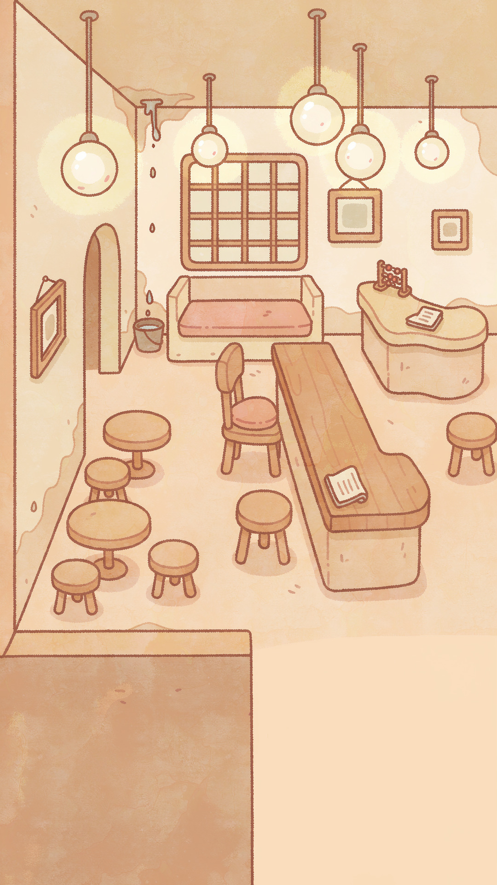
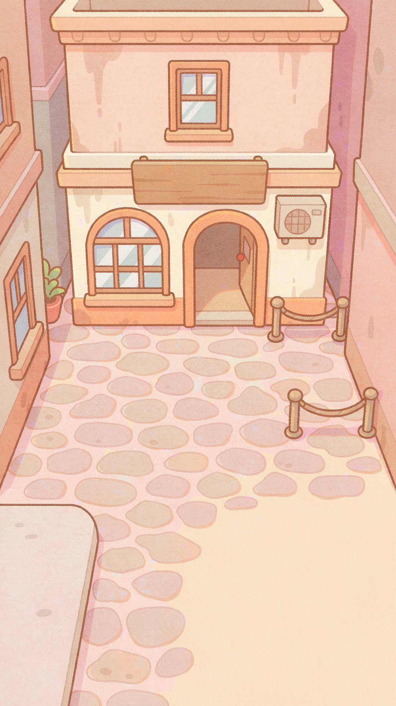
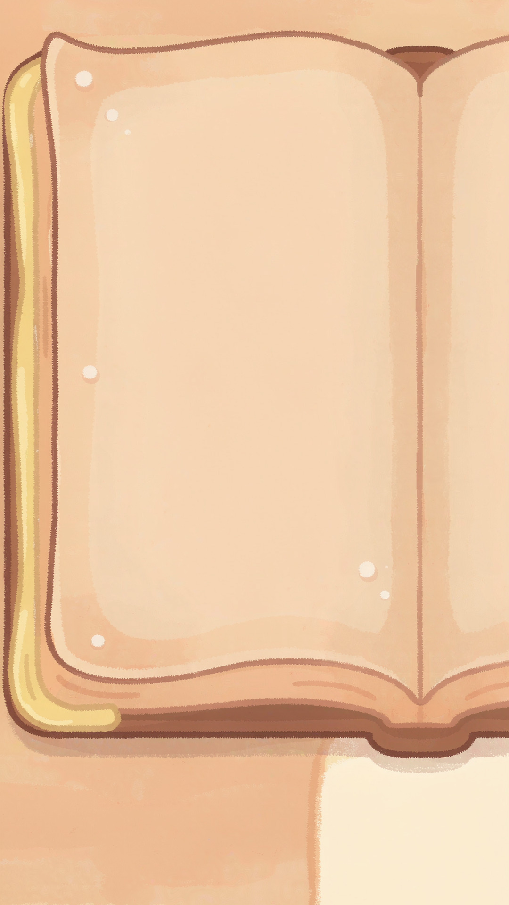

4 个常驻场景底图生成预览 ｜ 依据「糖霜团子 / Sugar Dumpling」冻结风格与玩法流程 3.1
_deprecated。P1 练习关 / P3 挑战关 / V2 无配方模式的主战场

| 剧情职能 | 连焦三炉（0-3）、面团山（2-3）、摔模具（3-5）、通宵百页（5-5）；终章故意焦一角的布丁在此出炉 |
|---|---|
| 落图细节 | 奶油杏墙 + 明显水痕 + 天花板漏雨补丁与接水小桶、圆烤炉、无标签糖罐面粉罐、软圆面团 |
| 禁止项 | 人物、刀、火焰黑烟、锐角金属、任何文字 |
| 视角 / 光向 | 45° 俯视；左上主光、右下暖反光；深棕描边从浅底分离 |
| 状态 | 已生成 · 小改待精修 |
P4 接单经营 / P5 装扮 / P6 结算 / P8 岗位派遣，终章七人同框之地

| 剧情职能 | 开张（1-1）、账本「对不住」（3-3）、5-4 账本重新摊开、6-7 全员写下「今天不累。」 |
|---|---|
| 落图细节 | 水痕 + 接水桶、账本摊开在柜台上且页面无字、算盘、蜜桃粉靠窗固定座、长桌向右延伸、门后空位 |
| 禁止项 | 人物、门后先挂匾额、账本收进抽屉、任何文字 |
| 设定咬合 | 向右延长的长桌为 S8「同一张桌子的延长」预留，不做成对立店面 |
| 状态 | 已生成 · 小改待精修 |
P4 排队客流 / 街边事件／终章咕咕外送队挂牌处

| 剧情职能 | 捡书（0-1）、当街开炉（2-1）、排队到街口（2-7 / 3-1）、5-4 豆豆留人 |
|---|---|
| 落图细节 | 旧仓库改的店门脸 + 淡水痕、焦糖橘圆角门框、完全无字木招牌、圆石排队空地与两根圆角矮柱、街对面预留小摊空位 |
| 禁止项 | 招牌写字、人物、鸽子占位（外送队是终章才挂牌）、任何文字 |
| 元规则 | 店名与所有文字由字体渲染，图里一律留空；避免多语言版本要重出底图 |
| 状态 | 已生成 · 小改待精修 |
非物理空间：进度条、主线钩子、第 100 页回想关入口，三合一的一屏

| 剧情职能 | 0-3 第 1 页显形、3-9 撕纸角、4-8 归还、5-6 百页齐鸣、6-5 第 101 页显字 |
|---|---|
| 落图细节 | 摊开的圆角旧书页、泛黄纸感与书脊、页心完全留空可摆 101 页卡片、少量糖霜白点 |
| 禁止项 | 任何文字 / 数字 / 行线 / 密集插图；高亮显形由特效层叠加，不画进底图 |
| 状态规则 | 扣书期置灰由代码叠封条图形，显形态由 fx_frosting_reveal_v1 叠加，均不重出底图 |
| 状态 | 已生成 · 小改待精修 |
source/ 原图核实，非后处理造成），需人工改为整块背景或延展书页；糖霜白点实出约 6 个，需收敛到 3 个。四张同一链路产出，规格口径完全一致
| 项 | 值 |
|---|---|
| 成品 | 1080×1920 JPG 不透明 · standalone · 命名四段式 + _v1 |
| 原图 | source/*_v1_src.png 保留可复核，AI 生成来源与参数已标注 |
| 尺寸处理 | 模型实出 1072×1920 → 等比缩放 + 中心裁切到 1080×1920，不拉伸 |
| 水印处理 | 右下角预留平坦色块 → 上方等大色块复制 + 12px 羽化回填，四张目视无残留 |
| 风格冻结 | STYLE BLOCK v1 逐字复用；场景专用 SCENE TECHNICAL v1 逐字复用 |
| 校验 | 命名合规、尺寸一致、无文字、无水印；check 报 4 项「非 2 的幂」属 standalone 例外 |
| 同族比对 | 4 张 / 220px 缩略图接触表通过：描边、哑光平涂、奶油暖色一致，无明度突变 |
| 范围 | 处理内容 |
|---|---|
| S1 | 色温偏橘粉，墙面按 #F5E4C9 校色；制作台物件密度可按玩法需要人工补件；描边统一 3px |
| S2 | 账本页几条细线需抹平；与 S8 长桌衔接处需对齐；左下深色矩形确认是地垫或改为连续地面 |
| S3 | 右上空调外机与旧仓库调性冲突，建议去除；左下浅色圆角块按「小摊预留位」保留或统一铺地 |
| S4 | 右下直角浅色块改为整块背景；糖霜白点 6 → 3；页心留白保持 |
| 四张共同 | 描边统一到 3px @1024 基准、修 AI 边缘锯齿、生成内容商用授权范围做法务确认 |